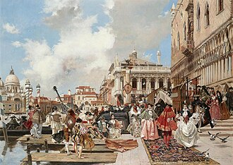
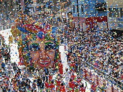

Carnaval
Le carnaval est un type de fête relativement répandu en Europe et en Amérique. Il consiste en une période pendant laquelle les habitants de la ville sortent déguisés (voire masqués ou bien maquillés) et se retrouvent pour chanter, danser, faire de la musique dans les rues, jeter des confettis et serpentins, défiler, éventuellement autour d’une parade constituée de musiciens, de danseurs et de chars décorés.Héritiers de rituels antiques tels que les Lupercales et la Guillaneu, ils sont traditionnellement associés au calendrier chrétien et se déroulent entre l'Épiphanie, soit le 6 janvier, et le Mardi gras avant le mercredi des Cendres une fête mobile entre le 3 février et le 9 mars.

Étymologie
Le nom masculin carnaval apparaît en français sous la forme carneval en 1549 pour exprimer le sens de « fête donnée pendant la période du carnaval »[1],[2]. C'est un emprunt[3],[4] à l'italien carnevale ou carnevalo[3],[4],[5]. Il a pour origine carnelevare, un mot latin formé de carne « viande » et levare « enlever »[6],[2]. Il signifie donc littéralement « enlever la viande ». Des étymologies fantaisistes ont été jadis avancées, telle que « caro vale » pour « adieu la chair »[7]. Une autre hypothèse propose carrus navalis (« char naval », en français), en relation avec le Bateau d'Isis (en) (Isis). Jusqu'au XIXe siècle, le nom masculin carême-prenant a été utilisé en français à égalité avec carnaval. Il a été orthographié de diverses manières : caresme-prenant, quaresmeprenant, etc. On le retrouve dans le journal de Pierre de l'Estoile, chez Molière, etc. En France on peut trouver des variantes régionales de carême-prenant, telles que caramentran en Provence[8]. De carême-prenant, on a dérivé deux expressions. L'une : « tout est de carême-prenant », pour parler de certaines libertés, en particulier dans le domaine des mœurs, qui se prennent ou prenaient traditionnellement pendant le carnaval. L'autre, pour désigner une personne costumée en carnaval, ou en général quelqu'un d'habillé de façon ridicule. Dans cette situation, on entend crier « Au secours, au secours, votre fille on l'emporte, Des carêmes-prenants lui font passer la porte[9] ». On trouve aussi dans le Bourgeois gentilhomme de Molière : « On dit que vous voulez donner votre fille en mariage à un carême-prenant »[10]. Du nom carnaval dérive l'adjectif carnavalesque (relatif au carnaval), mais aussi certains régionalismes tels que carnavaleux et carnavalier : le premier désigne, dans la région de Dunkerque, en Belgique et au Québec, un participant au carnaval[11],[12] ; le second un artiste créant des œuvres pour le carnaval tels que chars, des géants, des grosses têtes, etc. Les « carnavaliers » les plus célèbres de France sont établis à Nice où le métier se transmet de père en fils depuis 1870 et où ce mot est traditionnellement utilisé[13].

Périodes du carnaval
La période carnavalesque varie fortement entre les lieux ; En Europe, elle se déroule généralement à la période hivernale, au plus tôt en novembre et au plus tard en mai. Quelques traditions masquées commencent à la Toussaint, et le carnaval d'Allemagne commence le 11 novembre à 11 h 11 précises, lors des foires de la Saint-Martin[14]. La majorité des carnavals européens a toutefois lieu après Noël, débutant soit à l'Épiphanie, pour la Saint-Antoine et le tuage du cochon, à la Chandeleur, un mois, quinze jours, ou le jeudi avant Mardi Gras[14]. D'autres carnavals, tels que les Laetare, ont lieu à la mi-carême[14]. Enfin, en Scandinavie, les carnavals ont lieu autour de la Pentecôte, et celui de Notting Hill se déroule au mois d'août[14]. Plus particulièrement en Suisse, le carnaval de Bâle débute le lundi suivant le mercredi des Cendres, à 4 du matin, tandis qu'à Lucerne, il commence le jeudi gras également à 4 h du matin[15]. En Grèce, il s'appelle Apokriá et se termine le Lundi pur.